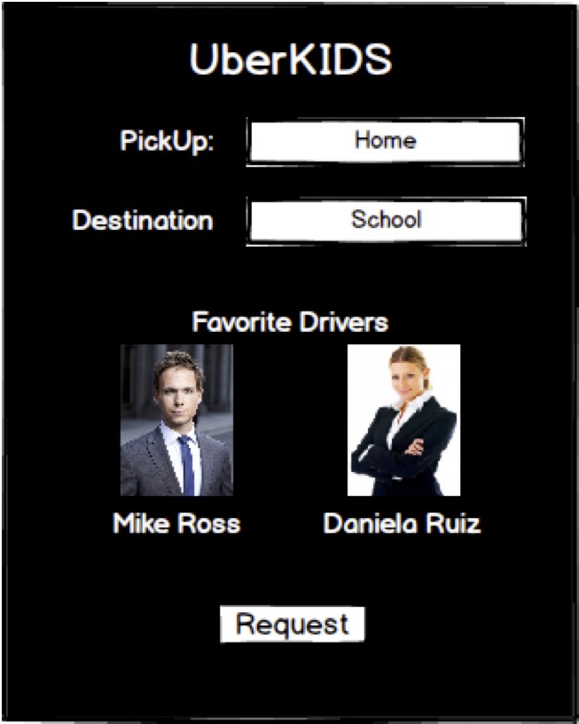
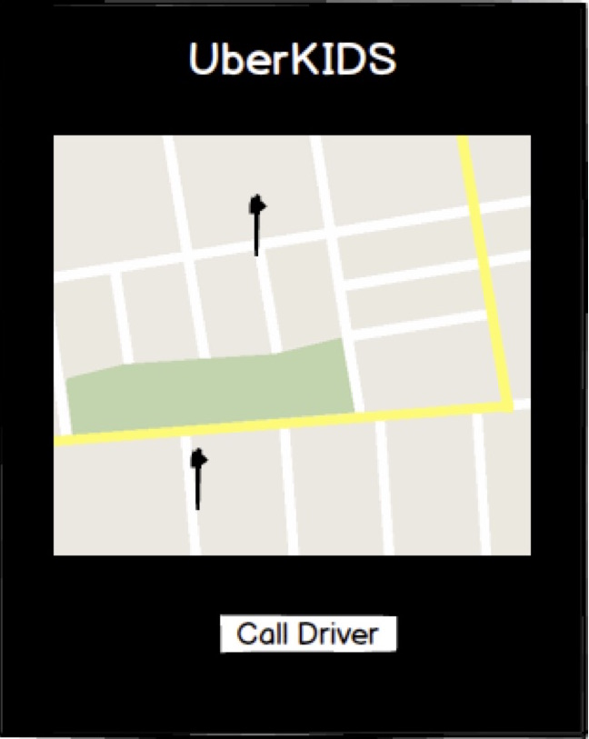
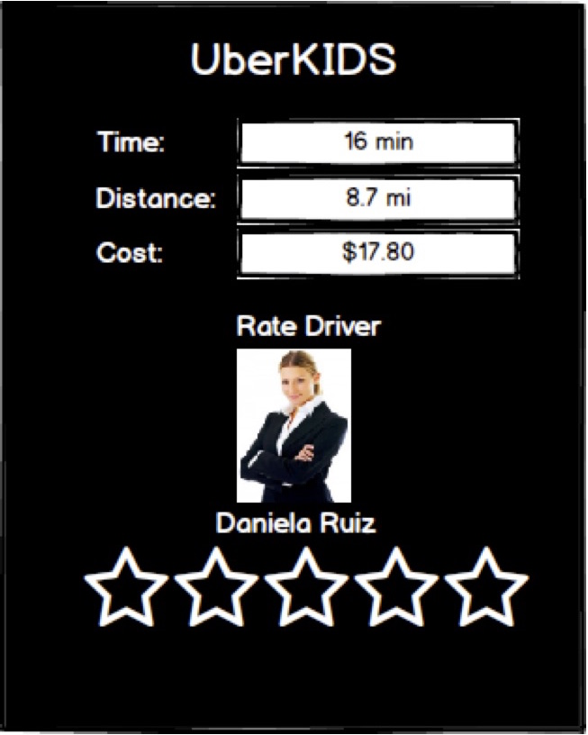

Iterative Design
Iterative Design is a design methodology in which the product is created in the following phases: prototyping, testing, analyzing and refining. The steps are repeated until the product is finished. This allows for a precision based product in which every deail is taken into account and the product aims for perfection. It is important in interaction design as this method allows us to actually visualize our product and modify it according to the necessities of the end-goal.
Action, Knowledge, Pation
We accomplish action by achieving our functionality goal. There are 4 tasks in our project. Log in, request a trip, monitor a trip, and review the driver, and they are all implemented in our project.
We accomplish passion by making our project as "mother friendly" as possible. In other words, most of our clientele will be moms with children, and we made sure that our webpage is friendly for them.
We accomplish knowledge by utilizing current aplications similar to our project to serve as a starting point. Specifically, we took a look into Uber mobile app to give us an idea of how to implement our project. By utilizing one of the most utilized personal driver services we are utilizing all of the succesful ideas into our project.
Methodology for User Interface
User interfaced has a simple goal: making the interface as friendly and useful for the user as possible. The methodology I propose for developing a user interface bases itself on user research and testing. The steps would be as followed:
1. Research the user group. The designer is not the person who will be utilizing the user interface, it is the actual user who will be having to deal with the user interface. Therefore, it is important to know what the user wants and needs.
2. Create a prototype. Based on the research done, an initial prototype is developed to allow for testing with the users.
3. Test prototype with actual future users. We utilize a group of potential users to test the product and give us feedback about what is wrong and what is right. There is a parallel interaction between user testing and product modifications to adjust the product to the user's needs.
4. Modify prototype according to testing results. The prototype is molded and evolves into what becomes an initial release based on the user's feedback.
5. Release an initial version. Stable version is released and feedback continues to be gather to adjust user interface.
6. Adjust as necessary. As users utilize the actual product, feedback about what is useful and what not is gathered and used to refine the product.
Proyect Status
The proyect is going along very well. The documentation for the actual web page is finished. This includes the work from partial 1 and partial 2, going from the initial investigation and persona through the balsamiq mockup and proto.io. Everything is set up to create the actual product webpage. I have the design and functionality planned, it is just a matter of creating the code. I would give myself all of the 30/30 points in effort as I am doing the project alone, and 65/70 in results (I have done all of the work, but still have not gone beyond the requirements) for a total of 95/100.
Business Proposal
Project Description
The project consist of a solution called UberKIDS in where mothers can safely send their kids with personal driver and are able to monitor and contact the driver at any times. The product consist in 4 main modules:
-Log in/Register: The user registers into our database and/or logs into the system.
-Order a Trip: Once logged in, the user is able to select a pick up point, a destination, and a driver for the trip.
-Monitor a Trip: After the driver picks up the kid, the user can monitor the car via GPS during all of the trip.
-Review a Trip: Once the driver leaves the kid in its destination, the user is prompted with a 5-star review system for the driver as well as trip details such as distance, time, and cost.
Safety Assurance
The drivers go through a rigorous process to be able to work in the UberKIDS module. They are trained and certified into treating well and attending the children's necessities. The user can monitor the car 100% of the time during the trip and is able to instantly contact the driver for any reason. Safety is the #1 goal of our solution.
Procedure
1. Research clientele
2. Create prototype
3. Test prototype
4. Adjust product
5. Test stable version
6. Release product
Cost
Developing the webpage will take approximately 3 months, for a total of 90,000.00 MXN.
Part 2
UberKIDS in an iWatch
1. Would you utilize the iWatch to order a pre-defined trip with your favorite driver?
Answer: It depends where I am and what time it is. A pre-defined trip will most likely be some place in a daily basis such as school, and when my kid goes to school in the morning I am not using the iWatch. But some cases such as soccer practices in the afternoon would certainly be viable to request through the iWatch.
2. If your favorite driver is not available, would you allow the system to chose one for you?
Answer: Only if it haf a 5-stars review. I am a bit insecure of sending my children with someone I do not know, but if the driver has perfect reviews I will feel much more comfortable.
3. Would you be willing to utilize the iWatch to monitor your kid's trip?
Answer: It is important for me to know where my children is and the iWatch lets me know where he is in a matter of seconds, so yes.
4. How many clicks would you be willing to make in order to request a trip?
Answer: At most, 3.
Interaction with iWatch
There are 5 main interaction methods between the user and iWatch. The tactile display screen, the digital crown, the side button, voice commands through Siri and interaction through the watch application in the iPhone. Of these options, there are 2 which would help us with our solution. The tactile display screen and Siri. There could be 2 options to request a trip: to order it manually through clicks in the iWatch, and to request it through Siri.
Strategic Goal and Tasks
Strategic Goal: to request a trip with the least effort required in the iWatch.
Tasks:
1. Open the application
2. Select a pre-defined trip
3. Select a Recent Driver
4. Request the trip.
5. Monitor the trip
6. Rate the Driver
Mockup
Request Trip

Monitor Trip

Rate Trip

Evaluation of Mockup
To evaluate my mockups, the following answers should be answered:
Does the mockup show the tasks to be accomplished?
Does the mockup lead to accomplishing our strategic goal?
Does the mockup portray a visual idea of what the product will look like?
Google Analytics
Google Analytics ID: UA-85997448-1